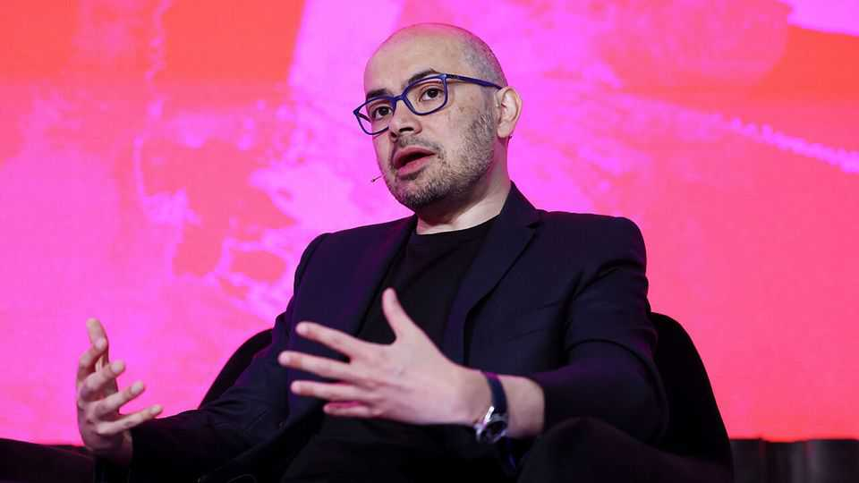

Demis Hassabis has a plan to harness AI safely
The Google DeepMind co-founder sets out his vision in an exclusive interview
July 16th 2026

THE WORLD’S artificial-intelligence superpowers are beginning to throw their weight around. The American government’s short-lived decision to withhold foreigners’ access to Fable, a whizzy AI model from Anthropic, reflected not just a desire for control over the technology but also fear of the dangers it could pose in the wrong hands. Now China is said to be considering curbing overseas access to its most advanced models. Yet for AI to be harnessed safely, the industry needs a plan that is coherent and predictable. Sir Demis Hassabis, the co-founder of Google DeepMind, thinks he has one.
Sir Demis has sketched out proposals for AI regulation in the past. His latest attempt—published online on July 14th and elaborated in an interview with The Economist—is more concrete. The American government, he says, should develop a system for testing the safety of new AI models before they are released. “It’s important that it’s not just an industry body,” he adds. But a regular government agency wouldn’t do either. “It would not be able to move fast enough, or have the right resources.” Instead, Sir Demis suggests taking inspiration from FINRA, the Financial Industry Regulatory Authority, a private agency in America that regulates brokers and stock markets.
It is a pragmatic proposal. Gone are the optimistic hopes, still held by some of his peers, of first establishing international consensus: America, he says, must lead the way. Agreement is not required because other countries will fall in line in order to maintain access to American technology and the vast American market. One day that could even extend to China, helping to avert a race to the bottom on safety. Although Sir Demis thinks the scheme should initially be voluntary for model-makers, his expectation is that it will end up mandatory. FINRA, by way of example, has hard enforcement powers delegated to it by the state.
Sir Demis’s approach differs from that suggested by Sam Altman, the boss of OpenAI, who wrote an op-ed in the Financial Times earlier this month. Both men agree that the work of the new oversight body would be to establish standards, analyse risks and ensure that only countries that have joined the cause gain access to cutting-edge AI. Mr Altman, however, has called for an international effort, albeit one co-ordinated by America. Both proposals were presented to world leaders at a recent G7 summit in France.
Sir Demis’s new proposal is the most detailed to have arrived from an AI bigwig. So far the industry’s senior figures have been more comfortable calling for rules in the abstract than designing regulatory agencies from scratch. Sir Demis, by contrast, has considered many of the practical details. He says the new agency should be funded by the industry, and that much of its immediate attention would be directed towards recruiting a talented team (existing AI-safety bodies, such as those in America and Britain, could offer support in the short term).
Sir Demis suggests that the new agency should focus on the labs making the most capable AI models (which includes his own). Earlier proposals from America and the European Union looked to the amount of computing power used to train a model as a rough guide for when oversight was required. Sir Demis instead suggests designating AI models as “frontier” if they meet certain thresholds across a selected set of benchmarks. The creators of those models would then be designated as “frontier labs”, placing extra responsibilities on them. Sir Demis is proud of the “elegant” way that approach sidesteps the question of whether academic or open-source models should be included or not. What matters is their capabilities.
Selecting the right benchmarks would be an important function of the new agency. Existing tests of AI models focus largely on commercial capabilities, including software coding and general knowledge. Some organisations have gone further: Britain’s AI Security Institute, for example, has developed a well-regarded test for hacking capabilities which simulates breaking into a power station. But other characteristics, such as how willing a model is to ignore a user’s instructions or pretend to be less capable than it is, are rarely examined in a systematic way that could be used to set a safety threshold.
Securing support from within the increasingly fractious AI community will not be easy, though the areas in common with Mr Altman’s proposal suggest it is not impossible. The American government also appears to have been listening, and is said to be close to unveiling its preferred approach. Then will come the hard part. “No proposal would be immune to being executed poorly,” Sir Demis admits. “There are obviously versions of this that could be not very useful.”
Yet the Nobel laureate argues that urgent action is required. “Time is short, the hour is late,” he says. “We’ve seen the cyber threat; there’s much more serious threats coming down the line. Something has to be done: this is the time.” ■
To track the trends shaping commerce, industry and technology, sign up to “The Bottom Line”, our weekly subscriber-only newsletter on global business.